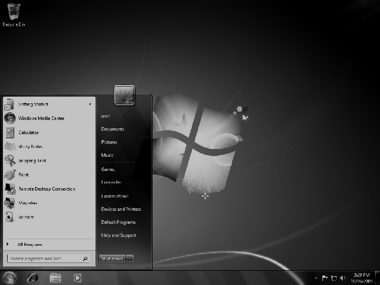
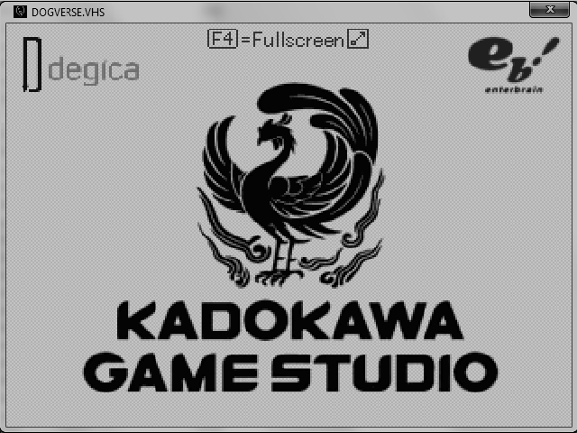
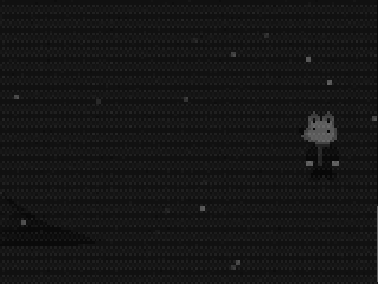
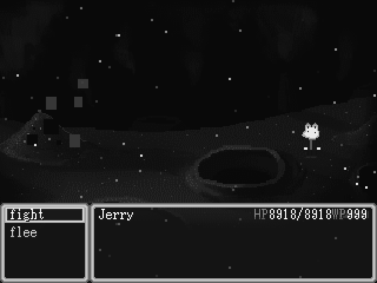

For the most optimal experience, you will need
To play the game, you must have the DOGVERSE.VHS Launch Disk inserted into your CD drive in order to launch the game.
Our protagonist, Jerry, was on his merry way, on his way to a Wal-Mart supermarket to pick up milk for his friend, but he fell into a wormhole in the road, and he ends up in the world of OneShot.
Now he's gotta find his way home by any means, even if it means helping out the inhabitants of this world.
For the best experience, please familiarize yourself with the controls.
You can use a joypad in place of your keyboard! You may need to bind the joypad buttons first. Refer to your joypad's instruction manual for instructions on how to do so.
Traverse through Oneshot's world and defeat enemies that stand in your way.
The regions are... the Barrens, the Glen, a small sewer, that leads to the Hometown, which then leads to a retro computer, which then leads to the Refuge, then the Tower.

We got you. Here's what you should know.

In a battle, you can run, or fight.
Help Jerry and Niko get to their respective homes. That's pretty much it. Literally the plot of Oneshot, but give Niko a morally questionable friend.
Jerry's just that teenage dog. He's the dog, with the most. He's boring, and funny. Basically, he's a street dog, having to look out for his friend. He might've seen shit, but he's still your average dog-person. No mother figure. Canonically, he's very morally questionable, but you get to decide whether he's a brutal murderer without a care, or a guy who avoids battling as much as possible.
The savior from Oneshot. They woke up in a weird bed, and traversed through the Barrens as normal, until he/she/they (for simplicity's sake, we'll use they/them for Niko from now on, because their gender is ambigious) met Jerry in the Glen. The story of Oneshot has deviated, and now the story of this game has really begun. Their goal is nigh. Mother figure, but no father figure. (for now)
Those two weird- I MEAN cool looking blue and red birds from Oneshot. They were off doing... what do they call it, bird stuff? Until these greek letter alien guys came and put them in bird cages. What happens after that? Play the game and you'll see. Orphans.
Y'know, so you can keep playing the game.
Please, do not bend, crush, submerge in a liquid, leave in a source of heat or in sunlight, blend, bake, bring to an extraterrestrial planet/star and ESPECIALLY do not bring to a Diddy freak off, or insert the disk into a CD player. We trust that you'll do none of these things to the poor disk. After all, it's a fucking disk, why subject it to that much trauma?
Still images can cause permanent picture-tube damage, or it can result in burn in on the CRT phosphor. Avoid standing in one place for too long, regularly degauss it, and get an LCD, dude! That's like, the shit today! But of course, if you're a nostaliga freak, you don't have to, and that's perfectly fine!
| Name | Date | Ending |
|---|